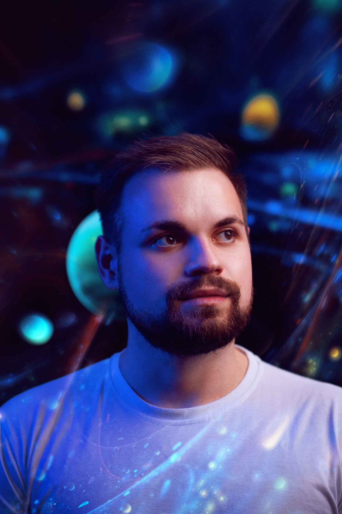

Hi, my name is Michal.
Born in 1996, I'm a QA Engineer and technology enthusiast with interests in various multimedia, art, and design. I have experience with both front-end and back-end testing, web applications, mobile application testing and hardware testing. I am currently studying the programming languages Python with JavaScript and their use in automation. In addition to this CV, I am working on a website for my hobbies. I use GitHub for my work.

michal.jor — QA eng.
How to contact me
My full name is Michal Jor and I currently live in 📍 Jičín, Czech Republic.
You can drop me a line at ✉️ michal.jor96@gmail.com.
I can be found on social networks — such as
LinkedIn
or GitHub.
What I do
I'm a QA Engineer with an emphasis on the manual testing of web and mobile apps, and I consider mobile testing as my main focus. I have extensive experience with writing step-by-step and BDD testing scenarios. On my initiative, I maintain a knowledge-know-how database. When possible, I organize retrospectives. I am a technical recruiter when interviewing new QA members for my team. Last but not least, I maintain a proactive approach to troubleshooting and communicating issues.
Testing & Testing Techniques
I try to cover all corners of the field, from control of interactive elements & features to UI design and UX to the overall final result presented to users. I value good testing practices. I keep clean reports and try to guide others to do the same. I record all preconditions for a specific flow in the knowledge database.
I also like open-source and non-proprietary solutions, so for example, it shouldn't be surprising that this resume is a Markdown file that can be converted easily into PDF, this website, or printed.
Hobbies & Other skills
I often spend some time improving myself in different fields. I actually have much more hobbies than the below listed, but I find hobbies such as "cooking", highly irrelevant to the purpose of this page.
- 3D printing So far I'm using other professionals' designs more, but I'm slowly getting into 3D modelling software like Tinkercad or Onshape.
- Game development So far this is only theoretical knowledge, however, I plan to create projects in the Godot engine, which uses GDScript's syntax that is mostly derived from Python.
- Laser engraving So far I only engrave wood, but I want to work my way up to more complex materials.
- Drone After completing the pilot tests (A1 & A3) I invest more free time to capture the world from a bird's eye view.
- Exercise Due to the nature of my job, I try to spend an hour a day exercising to lead a healthier lifestyle.
- Photography & Video editing In addition to a drone and a mobile phone, I also use a mirrorless interchangeable-lens camera to take photos and videos. I use Gimp (I'm switching to Krita) to edit photos and DaVinci Resolve to edit videos.
- Music I play the acoustic guitar as a self-taught artist, but I am gradually expanding my horizons to other instruments as well.
My past experiences
-
QA Engineer at Generali Česká pojišťovna
Feb 2025 – presentResponsible for testing front-end and back-end parts of a business web application, creating and managing test and functional documentation, working with SQL queries and using tools such as Postman, Swagger and Kafka.
generaliceska.cz → -
QA Engineer at Gen Digital
Feb 2024 – Jan 2025Manual testing of subscription marketing campaigns for Avast, AVG, Norton, CCleaner and HMA mobile apps.
gendigital.com → -
QA Engineer at Cera Care
Apr 2023 – Dec 2023Manual testing of a web application for caregiver management.
ceracare.co.uk → -
QA Engineer at Rohlik Group
Oct 2022 – Mar 2023Manual testing of mobile and web e-shop applications for Android and iOS systems.
rohlik.cz → -
QA Tester at eMan a.s.
Dec 2021 – Sep 2022Manual testing of web applications for energy companies (management of technicians, customer pages).
emanprague.com → -
Software tester at ŠKODA AUTO a.s.
Jan 2019 – Nov 2021Infotainment manual tester for communication with smartphones. MyŠkoda mobile application manual tester. Test engineer of software for virtual reality.
skoda-auto.cz →
Where I studied
What future holds?
Soon, I would like to move to a higher level and automate the testing processes. Based on this, I am self-studying Python, however, I would like to automate using TypeScript in the Playwright framework in the coming years.
In 5 years, I would like to develop into a front-end developer using React.